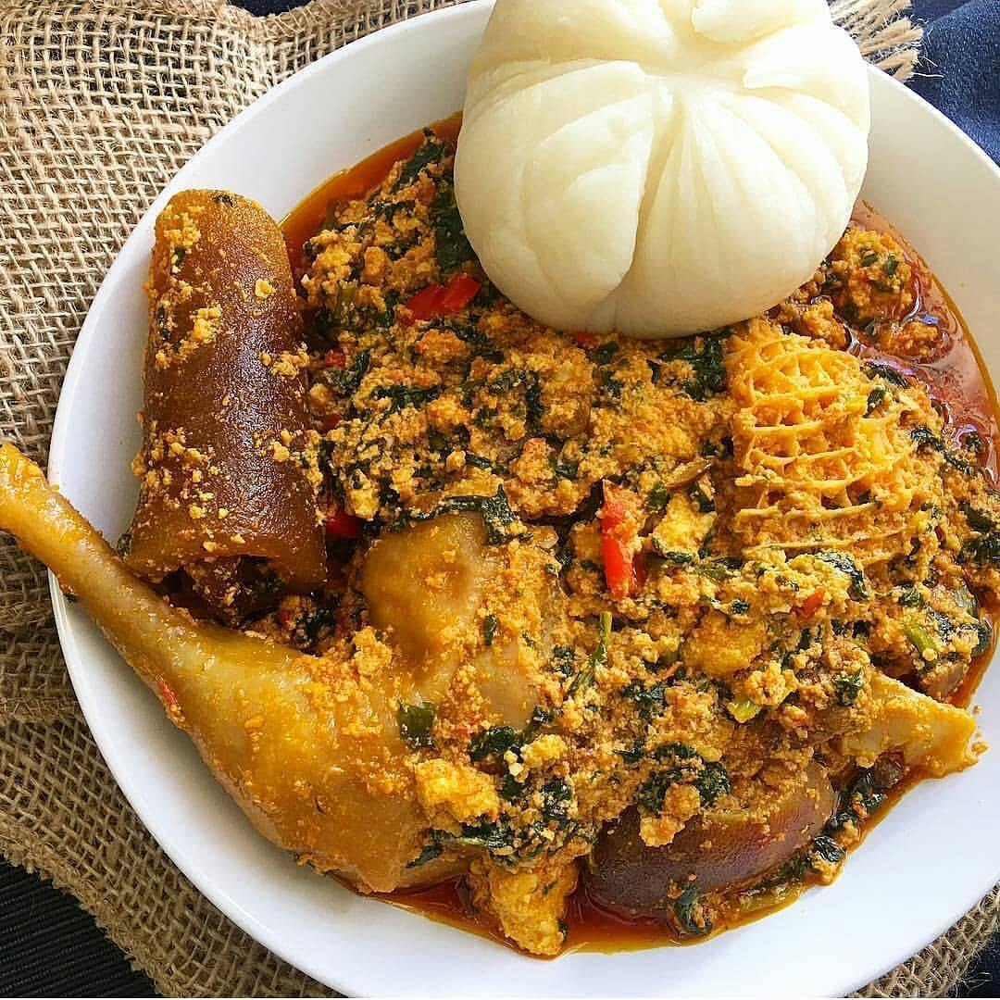

Egusi Soup

DESCRIPTION
Egusi soup is a thick Nigerian soup made from ground melon seeds, rich in protein and commonly eaten with swallow.
Ingredients:
- 1 cup ground egusi (melon seeds)
- 1/2 cup palm oil
- 2 cups spinach or bitter leaf
- 1 onion
- 2 cups meat or fish stock
- Assorted meat or fish
- 2 seasoning cubes
- Salt and pepper to taste
Steps:
- Boil meat with seasoning until tender.
- Heat palm oil and fry onions.
- Add egusi and fry lightly.
- Add stock and cooked meat.
- Simmer until thick.
- Add vegetables and cook for 5 minutes.
- Adjust seasoning.
- Serve with pounded yam or eba.